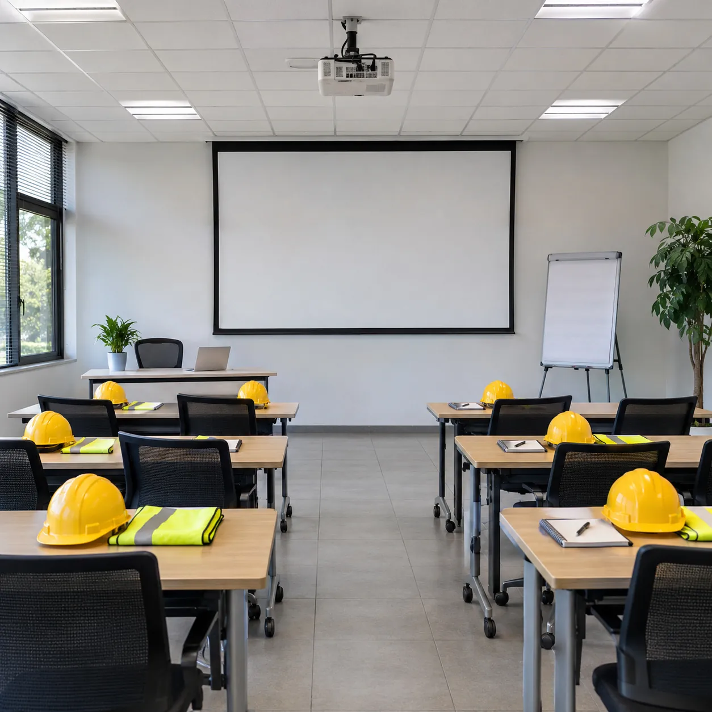
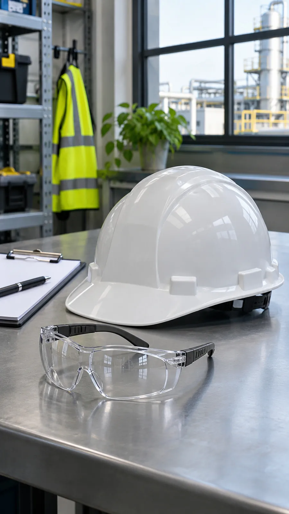
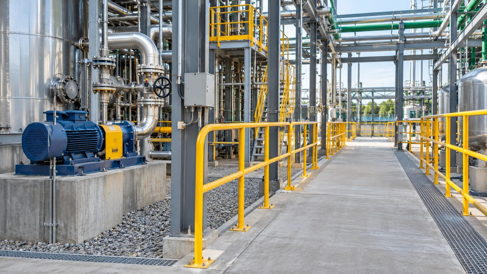
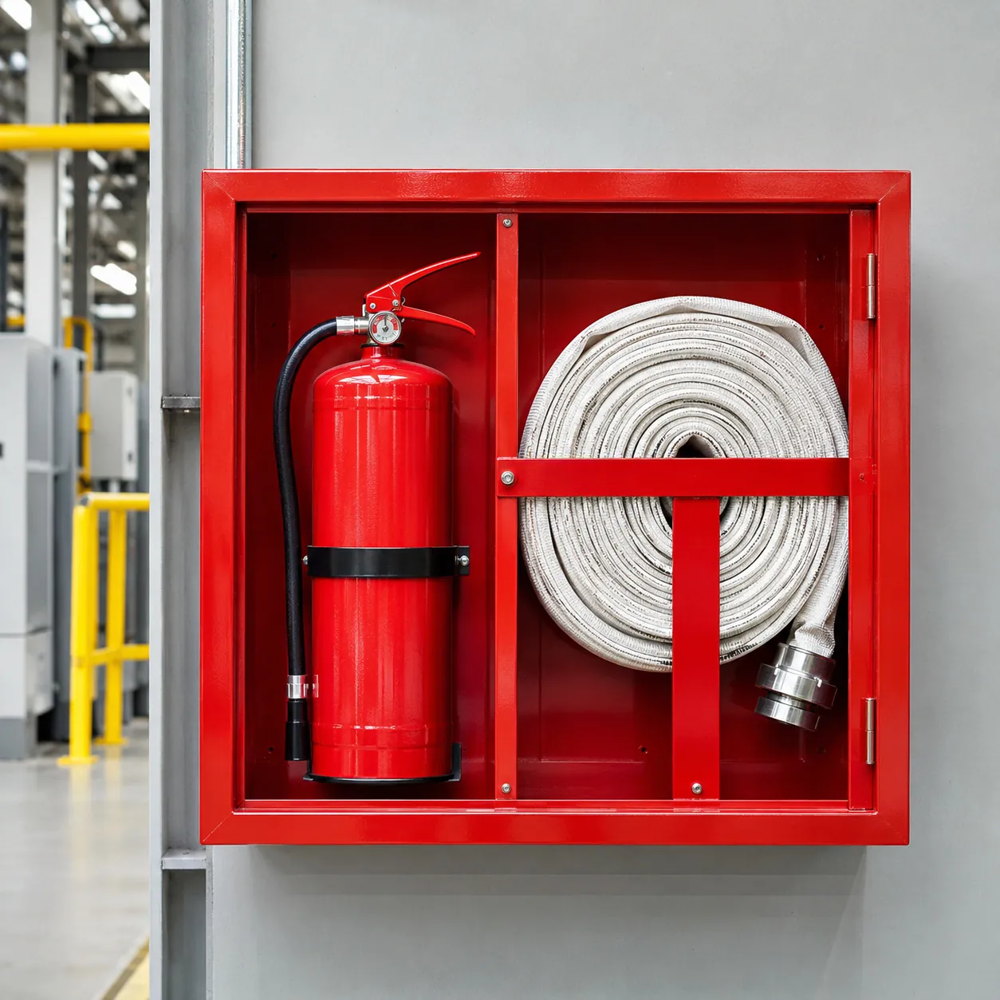
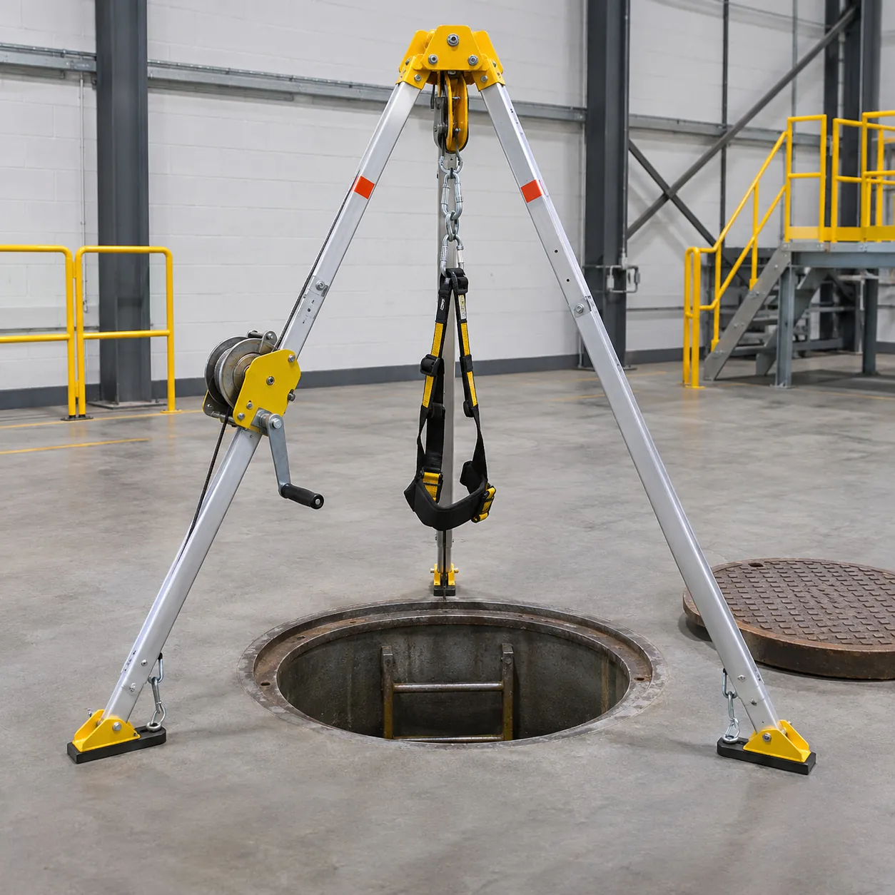
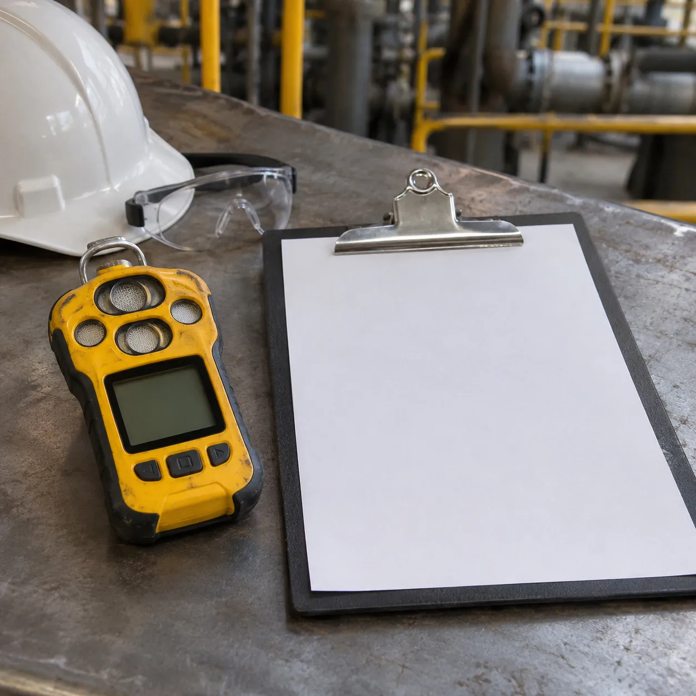

CONSULTORA DE SEGURIDAD E HIGIENE
Resur.
Seguridad industrial y emergencias.
Formación profesional, prevención y gestión de riesgos para cuidar a las personas en cada operación.


LA CONSULTORA
La seguridad se trabaja antes.
Resur es una consultora de seguridad e higiene dedicada a la seguridad industrial y las emergencias.
Conectamos formación, prevención y gestión de riesgos con las necesidades de cada operación.
Conocé nuestro enfoqueEN CADA OPERACIÓNLas personas, primero.
QUÉ HACEMOS
Cada riesgo merece una respuesta preparada.



PARA SEGUIR APRENDIENDO
Prevenir también es informarse.
Videos informativos de UOCRA. Material de consulta externo a Resur.
EL PRÓXIMO PASO
La prevención empieza con una conversación.
Contanos qué necesitás
Capacitación, prevención, rescate o gestión de riesgos.